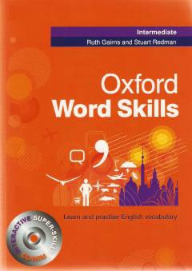

OWIngliz tili lug'at boyligini oshirish uchun mo'ljallangan samarali o'quv qo'llanma.
Ushbu kitob ingliz tilini o'rganayotgan o'rta darajadagi talabalar uchun mo'ljallangan lug'at boyligini oshirish bo'yicha keng qamrovli qo'llanmadir. Unda turli mavzular bo'yicha so'z boyligini rivojlantirishga qaratilgan mashqlar va amaliy topshiriqlar jamlangan.